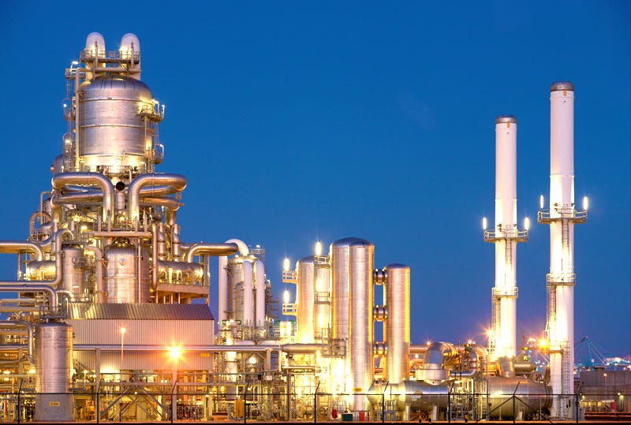

 <!-- ======= About Us Section ======= -->
 <section id="about" class="about pt-5">
  <div class="container" data-aos="fade-up">

    <div class="row gy-4">
      <div class="col-lg-6 position-relative align-self-start order-lg-last order-first">
        
        <a href="https://www.youtube.com/results?search_query=refining+chemical+vlog+video" class="glightbox play-btn"></a>
      </div>
      <div class="col-lg-6 content order-last  order-lg-first">
        <h3>Refining Chemical Services for Global Industries Company</h3>
        <ul>
          <li data-aos="fade-up" data-aos-delay="100">
            <i class="bi bi-diagram-3"></i>
            <div>
              <h5>Specialized Chemical Formulations</h5>
              <p>Tailored solutions designed to enhance the quality and purity of raw materials.</p>
            </div>
          </li>
          <li data-aos="fade-up" data-aos-delay="200">
            <i class="bi bi-fullscreen-exit"></i>
            <div>
              <h5>Compliance and Safety Standards</h5>
              <p>Ensuring adherence to industry regulations and safety standards for efficient chemical processing.</p>
            </div>
          </li>
          <li data-aos="fade-up" data-aos-delay="300">
            <i class="bi bi-broadcast"></i>
            <div>
              <h5>Process Optimization Consulting</h5>
              <p> Expert guidance in refining processes to improve efficiency and reduce environmental impact.</p>
            </div>
          </li>
        </ul>
      </div>
    </div>

  </div>
</section><!-- End About Us Section -->
